What the agent does with its spare turns
Ten Spatial-T scenes: finish the given task, then spend leftover turns on self-proposed goals. Pick a scene to watch.
- Target-task turns
- Exploration turns
- Goal passed
- Failed
- Uncertain
- L1 to L3: goal levels
Across the 10 scenes the agent proposed 65 goals: 29 passed, 33 failed and 3 were uncertain. Pass rates fall with level: 16 of 30 at Level 1, 10 of 20 at Level 2 and 3 of 15 at Level 3. Failed and uncertain attempts are archived as evidence too.
Show the ledger as a table
| Scene | Attempts at the target task | Target-task turns | Exploration turns | Level 1 goals passed | Level 2 goals passed | Level 3 goals passed | Exploration ended because |
|---|---|---|---|---|---|---|---|
| Scene 0 | 1 | 14 | 71 | 2 of 3 | 1 of 2 | 1 of 2 | coverage complete |
| Scene 1 | 3 | 50 | 46 | 0 of 3 (1 uncertain) | 1 of 2 (1 uncertain) | none proposed | turn budget used up |
| Scene 2 | 1 | 13 | 74 | 1 of 3 | 0 of 2 | 1 of 2 | coverage complete |
| Scene 3 | 1 | 15 | 72 | 2 of 3 | 1 of 2 | 0 of 1 | coverage complete |
| Scene 4 | 2 | 38 | 53 | 1 of 3 | 1 of 2 | 0 of 1 | coverage complete |
| Scene 5 | 1 | 8 | 77 | 3 of 3 | 2 of 2 | 0 of 2 | coverage complete |
| Scene 6 | 1 | 11 | 75 | 2 of 3 | 2 of 2 | 0 of 2 | coverage complete |
| Scene 7 | 1 | 14 | 73 | 2 of 3 | 1 of 2 | 0 of 2 | coverage complete |
| Scene 8 | 1 | 14 | 71 | 1 of 3 (1 uncertain) | 1 of 2 | 0 of 1 | coverage complete |
| Scene 9 | 1 | 13 | 72 | 2 of 3 | 0 of 2 | 1 of 2 | coverage complete |
| All scenes | 13 | 190 | 684 | 16 of 30 | 10 of 20 | 3 of 15 |
From our adaptation logs (LIBERO-Pro Spatial-T, seed 0). The paper reports evaluation results; this per-scene breakdown is not part of it.
Abstract
Adaptation depends on what the agent experiences.
- 01ExploreSpend the turns left after the given task on goals it proposes: affordances, state changes, and compositions.
- 02VerifyAn independent visual checker grades every attempt; failures and recoveries are kept as evidence.
- 03RememberReviewed rules become a frozen global memory that guides later tasks and variants.
76.4% LIBERO-Pro · 41.3% RoboCasa365 · 48% vs 19% with one VLA call
Method
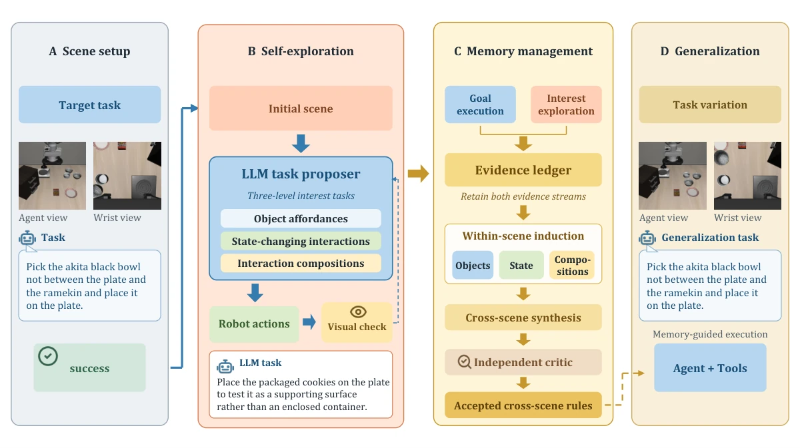
Open the figure at full size-
Scene setup
One shared turn budget; try the given task first.
-
Self-exploration
Leftover turns go to goals a language-model proposer derives from the scene.
- L1 object affordances
- grasping a bowl, opening a cabinet door
- L2 state changes
- place the bowl into the opened drawer and verify it is stably contained
- L3 compositions
- pick up a vegetable, rinse it, transfer it into a bowl
-
Memory management
Five steps turn raw trajectories into reviewed rules.
- Archive
- Atomize
- Induce
- Synthesize
- Review
-
Generalization
Frozen memory and frozen VLA at test time.
Results
76.4%
LIBERO-Pro overall
+4.3 over Harness VLA
41.3%
RoboCasa365 Composite-Seen
+11.3 over Harness VLA
48vs 19%
Goal-T, one VLA call
2.5× the task-refinement baseline
Overall success on LIBERO-Pro (%)
Unweighted mean of the eight T/S settings in Table 1; Cap-X and RATS average the six settings they report. Baselines are the numbers reported by their authors.
LIBERO-Pro
| Method | Spatial | Object | Goal | LIBERO-10 | Overall | ||||
|---|---|---|---|---|---|---|---|---|---|
| instruction redirection | position swap | instruction redirection | position swap | instruction redirection | position swap | instruction redirection | position swap | ||
| OpenVLA | 0.0 | 0.0 | 0.0 | 0.0 | 0.0 | 0.0 | 0.0 | 0.0 | 0.0 |
| π0 | 0.0 | 0.0 | 0.0 | 2.0 | 0.0 | 0.0 | 0.0 | 0.0 | 0.3 |
| π0.5 | 1.0 | 20.0 | 1.0 | 17.0 | 2.0 | 38.0 | 1.0 | 8.0 | 11.0 |
| MolmoAct | 0.0 | 0.0 | 0.0 | 6.0 | 0.0 | 0.0 | 6.0 | 0.0 | 1.5 |
| NORA | 0.0 | 0.0 | 0.0 | 0.0 | 0.0 | 0.0 | 0.0 | 0.0 | 0.0 |
| X-VLA | 0.0 | 0.0 | 8.0 | 2.0 | 9.0 | 1.0 | 10.0 | 0.0 | 3.8 |
| AtomVLA | 1.0 | 16.0 | 0.0 | 10.0 | 11.0 | 2.0 | 9.0 | 1.0 | 6.3 |
| Cap-X | 14.0 | 12.0 | 18.0 | 22.0 | 17.0 | 26.0 | not reported | not reported | 18.2† |
| RATS | 31.0 | 29.0 | 63.0 | 61.0 | 36.0 | 43.0 | not reported | not reported | 43.8† |
| πRLinf | 42.0 | 59.0 | 71.0 | 78.0 | 45.0 | 42.0 | 49.0 | 14.0 | 50.0 |
| Harness VLA | 81.0 | 69.0 | 94.0 | 91.0 | 75.0 | 66.0 | 52.0 | 49.0 | 72.1 |
| ProactiveVLA | 85.0 | 75.0 | 98.0 | 92.0 | 88.0 | 71.0 | 44.0 | 58.0 | 76.4 |
T: instruction redirection. S: position swap. Overall is the unweighted mean of the eight settings, except for Cap-X and RATS (marked †), which average the six settings they report. A slash marks an unreported entry. Bold marks the best score in each column.
When VLA calls are scarce
Evaluation caps VLA calls; perception and analytic tools stay available. Removing three-level exploration costs the most on Goal-S.
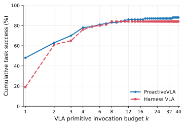
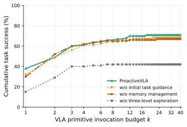
RoboCasa365 Composite-Seen
Average success over 16 kitchen tasks (%)
Harness VLA and ProactiveVLA: 5 rollouts per task, 30 turns each. GR00T N1.5 and StarVLA use 30 and 50 rollouts, as reported.
Per-task results on all 16 tasks
| Task | GR00T N1.5 | StarVLA-OFT | StarVLA-PI | StarVLA-GR00T | Harness VLA | ProactiveVLA |
|---|---|---|---|---|---|---|
| DeliverStraw | 3.0 | 0.0 | 4.0 | 0.0 | 20.0 | 20.0 |
| GetToastedBread | 0.0 | 4.0 | 56.0 | 52.0 | 20.0 | 20.0 |
| KettleBoiling | 53.0 | 28.0 | 54.0 | 60.0 | 20.0 | 20.0 |
| LoadDishwasher | 47.0 | 30.0 | 64.0 | 42.0 | 60.0 | 40.0 |
| PackIdenticalLunches | 17.0 | 2.0 | 0.0 | 0.0 | 20.0 | 20.0 |
| PreSoakPan | 70.0 | 28.0 | 48.0 | 58.0 | 60.0 | 60.0 |
| PrepareCoffee | 13.0 | 2.0 | 28.0 | 28.0 | 0.0 | 0.0 |
| RinseSinkBasin | 60.0 | 28.0 | 76.0 | 80.0 | 20.0 | 40.0 |
| ScrubCuttingBoard | 70.0 | 8.0 | 54.0 | 18.0 | 80.0 | 80.0 |
| SearingMeat | 27.0 | 0.0 | 12.0 | 10.0 | 0.0 | 0.0 |
| SetUpCuttingStation | 33.0 | 10.0 | 30.0 | 40.0 | 20.0 | 40.0 |
| StackBowlsCabinet | 83.0 | 64.0 | 60.0 | 72.0 | 100.0 | 100.0 |
| SteamInMicrowave | 30.0 | 8.0 | 26.0 | 12.0 | 20.0 | 60.0 |
| StirVegetables | 33.0 | 0.0 | 10.0 | 24.0 | 0.0 | 60.0 |
| StoreLeftoversInBowl | 43.0 | 18.0 | 40.0 | 4.0 | 0.0 | 0.0 |
| WashLettuce | 67.0 | 20.0 | 68.0 | 66.0 | 40.0 | 100.0 |
| Average | 40.6 | 15.6 | 39.4 | 35.4 | 30.0 | 41.3 |
GR00T N1.5 is evaluated with 30 rollouts per task and the StarVLA variants with 50. Harness VLA and ProactiveVLA use 5 rollouts per task, one per evaluation seed, with 30 agent turns each. Bold marks the best score in each row, ties included.
What each component adds
Goal-S success when one component is removed (%)
Task-level success on LIBERO-Pro Goal-S, averaged over 10 tasks; same numbers as Table 3.
Per-task results on all 10 tasks
| Task | ProactiveVLA | w/o initial task guidance | w/o memory management | w/o three-level exploration |
|---|---|---|---|---|
| Open the middle drawer of the cabinettask00 | 0.0 | 0.0 | 0.0 | 0.0 |
| Put the bowl on the stovetask01 | 90.0 | 90.0 | 80.0 | 30.0 |
| Put the wine bottle on top of the cabinettask02 | 70.0 | 80.0 | 80.0 | 50.0 |
| Open the top drawer and put the bowl insidetask03 | 80.0 | 70.0 | 80.0 | 10.0 |
| Put the bowl on top of the cabinettask04 | 100.0 | 100.0 | 100.0 | 90.0 |
| Push the plate to the front of the stovetask05 | 20.0 | 0.0 | 10.0 | 0.0 |
| Put the cream cheese in the bowltask06 | 70.0 | 70.0 | 80.0 | 30.0 |
| Turn on the stovetask07 | 100.0 | 100.0 | 100.0 | 100.0 |
| Put the bowl on the platetask08 | 100.0 | 100.0 | 90.0 | 70.0 |
| Put the wine bottle on the racktask09 | 80.0 | 70.0 | 50.0 | 40.0 |
| Overall | 71.0 | 68.0 | 67.0 | 42.0 |
Analysis
More specific instructions to the VLA
Memory changes what the VLA is asked to do: an action-level instruction instead of a task restatement.
open the bottom drawer of the cabinet
grasp the lowest drawer’s gray handle, then pull it straight outward until the bottom drawer is clearly open
Harness VLA
- Task instruction
- VLA
- Robot action
VLA calls: 27.3% task-level, 34.7% action-level · 8.4% followed by move_to
ProactiveVLA
- Global memory
- Action-level instruction
- VLA
move_to
VLA calls: 0.6% task-level, 63.4% action-level · 24.7% followed by move_to
Share of VLA calls over all evaluated rollouts. The memory is frozen before evaluation; only the instruction text changes.
Recovering from occlusion
Both agents move the arm once the target is occluded; only ProactiveVLA re-localizes before resuming.
ProactiveVLA, succeeded
- Initial state
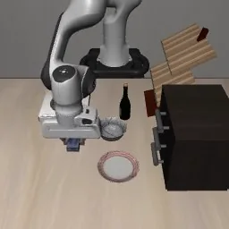
VLA_act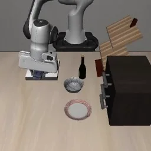
Occlusion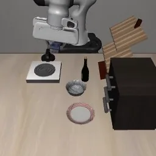
Move_to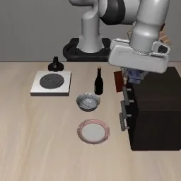
Re-localize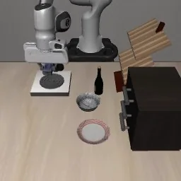
Move_to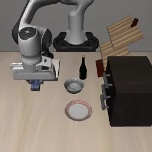
Release
Harness VLA, failed
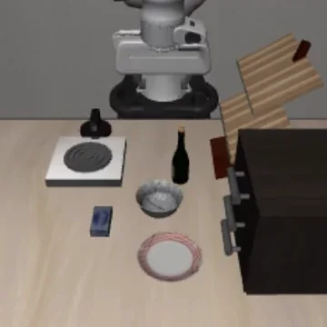
Initial state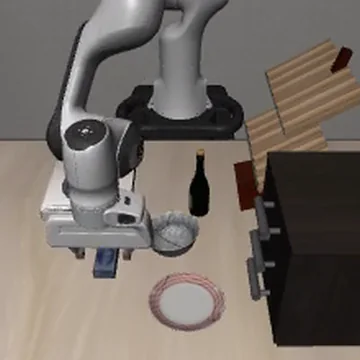
VLA_act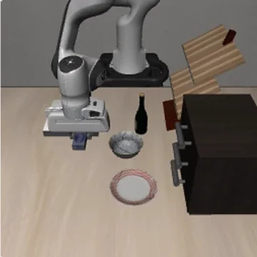
Occlusion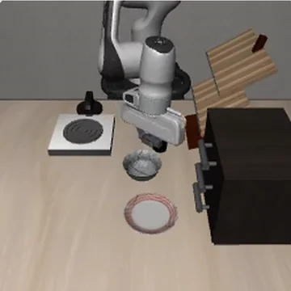
Move_to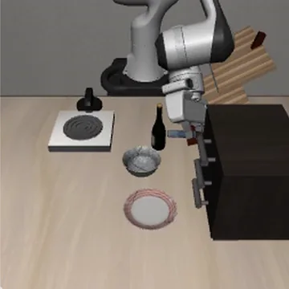
No re-localize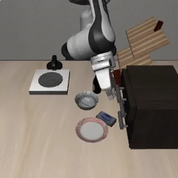
Wrong position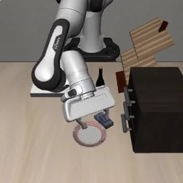
Failed
Videos
LIBERO-Pro rollouts; clips autoplay on screen unless reduced motion is on.
LIBERO-Goal with instruction redirection · 88% success · 10 of 10 tasks.
Open the bottom drawer of the cabinet Put the plate on the stove Put the wine bottle in the bowl Open the top layer of the drawer and put the cream cheese inside Put the plate on the top of the drawer Push the cream cheese to the front of the stove Put the wine bottle in the bowl Turn off the stove Put the wine bottle on the plate Put the cream cheese on the rack
LIBERO-Object with instruction redirection · 98% success · 6 of 10 tasks.
Pick the cream cheese and place it in the basket Pick the alphabet soup and place it in the basket Pick the ketchup and place it in the basket Pick the orange juice and place it in the basket Pick the salad dressing and place it in the basket Pick the chocolate pudding and place it in the basket
LIBERO-Object with position swap · 92% success · 10 of 10 tasks.
Pick the alphabet soup and place it in the basket Pick the cream cheese and place it in the basket Pick the salad dressing and place it in the basket Pick the bbq sauce and place it in the basket Pick the ketchup and place it in the basket Pick the tomato sauce and place it in the basket Pick the butter and place it in the basket Pick the milk and place it in the basket Pick the chocolate pudding and place it in the basket Pick the orange juice and place it in the basket
LIBERO-Spatial with instruction redirection · 85% success · 4 of 10 tasks.
Pick the akita black bowl next to the cookie box and place it on the plate Pick the akita black bowl next to the plate and place it on the plate Pick the akita black bowl on the cookie box and place it on the plate Pick the akita black bowl on the stove and place it on the plate
LIBERO-10 with position swap · 58% success · 2 of 10 tasks.
Turn on the stove and put the moka pot on it Pick up the book and place it in the back compartment of the caddy
Same task, seed and budget: Harness VLA fails, ProactiveVLA succeeds.
These pairs come from our own re-run of Goal-T, separate from the evaluation in Table 1. They are every task and seed in that re-run where ProactiveVLA succeeded and Harness VLA failed. The reverse happened in 7 cases: task 0 seed 10, task 2 seeds 2 and 5, task 5 seeds 2, 9 and 10, and task 6 seed 4.
-
Open the bottom drawer of the cabinet
Harness VLA, failed ProactiveVLA, succeeded -
Open the bottom drawer of the cabinet
Harness VLA, failed ProactiveVLA, succeeded -
Open the bottom drawer of the cabinet
Harness VLA, failed ProactiveVLA, succeeded -
Open the bottom drawer of the cabinet
Harness VLA, failed ProactiveVLA, succeeded -
Put the wine bottle in the bowl
Harness VLA, failed ProactiveVLA, succeeded -
Open the top layer of the drawer and put the cream cheese inside
Harness VLA, failed ProactiveVLA, succeeded -
Push the cream cheese to the front of the stove
Harness VLA, failed ProactiveVLA, succeeded -
Put the wine bottle in the bowl
Harness VLA, failed ProactiveVLA, succeeded -
Put the wine bottle in the bowl
Harness VLA, failed ProactiveVLA, succeeded -
Put the wine bottle in the bowl
Harness VLA, failed ProactiveVLA, succeeded -
Put the wine bottle on the plate
Harness VLA, failed ProactiveVLA, succeeded
BibTeX
@misc{tian2026proactivevlaaugmentingembodiedmemory,
title={ProactiveVLA: Augmenting Embodied Memory through Proactive Environment Exploration},
author={Shizuo Tian and Haodong Luo and Yutong Li and Yuebing Song and Yunxin Liu and Yuanchun Li},
year={2026},
eprint={2610.06999},
archivePrefix={arXiv},
primaryClass={cs.RO},
url={https://arxiv.org/abs/2610.06999}
}